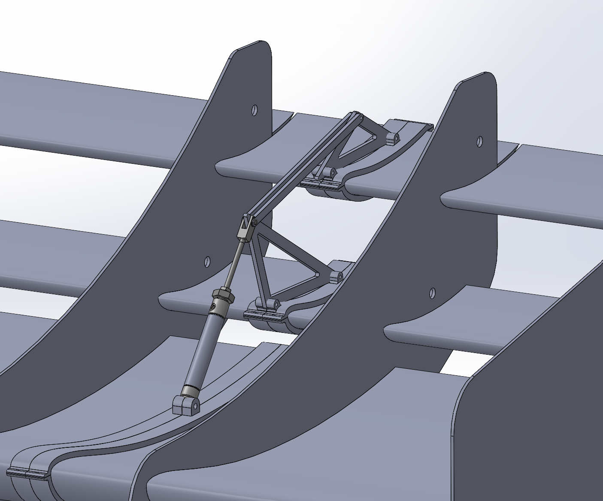

Engineering Projects

FSAE DRAG REDUCTION SYSTEM
I am currently leading the research, design, and prototyping of a pneumatic Drag Reduction System (DRS) for the rear wing of UCI’s Formula SAE Electric Racing Team.
While the current prototype is focused on the rear wing, the broader objective of this project is to establish a foundation for the future integration of active aerodynamic systems across the entire car.
check out this project!
Composites & Tooling Design
To take Anteater Electric Racing's composites manufacturing to the next level, I took charge of researching and documenting the resin infusion process, helped out with many infusion tests, and created a versatile design plan to create tooling in Fusion 360 for our carbon fiber aerobody parts.
check out this project!_edited.jpg)
Witch King Armor Project
For a class final project (UCI's MAE 52: Computer-Aided Design), I recreated the Witch King of Angmar's armor from the Lord of the Rings to my own proportions in SolidWorks CAD.
The final version of this project contained 42 moving joints (ball and hinge) and 25 distinct armor parts.
check out this project!
Autonomous Rover
I was the CAD Design Lead on a seven-person team building a color-tracking, line-following rover that picks up a can at the end of the track.
I designed the claw and lift mechanism plus a decorative "M-O" element (a nod to WALL-E), and helped integrate every subsystem onto the chassis.
check out this project!